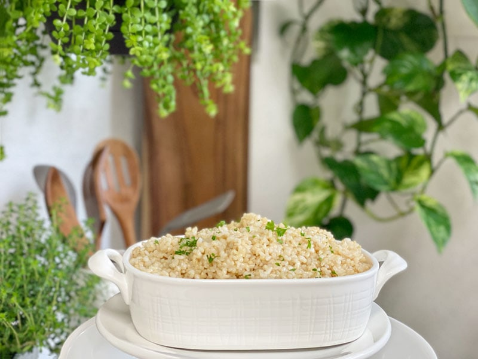
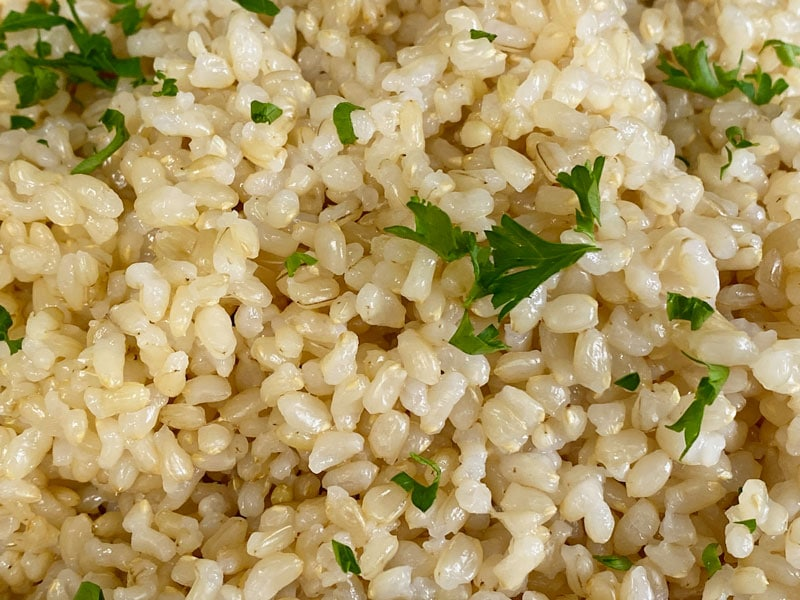
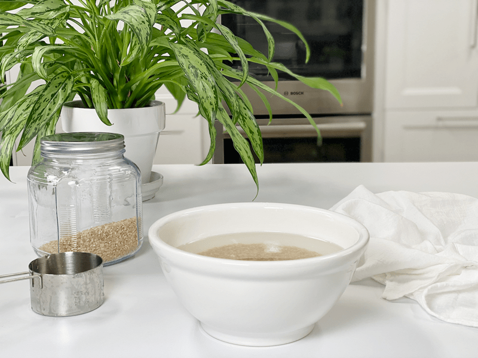
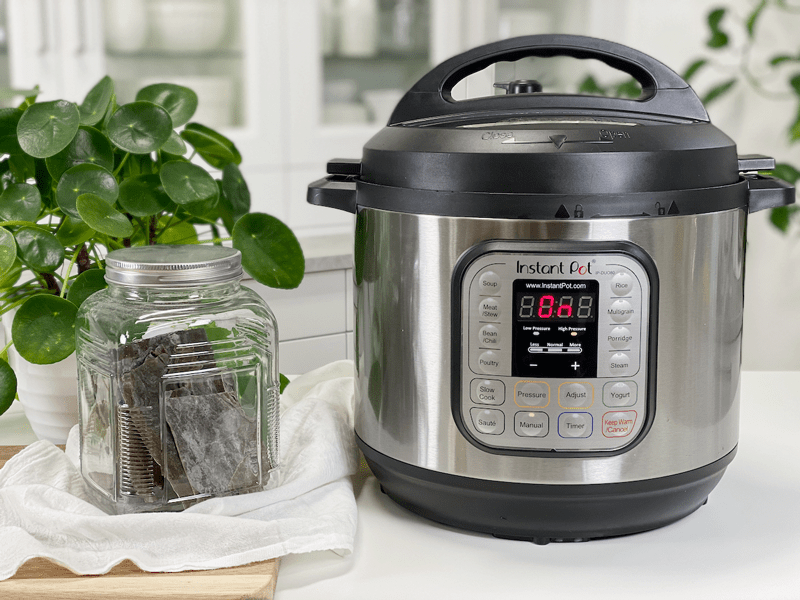
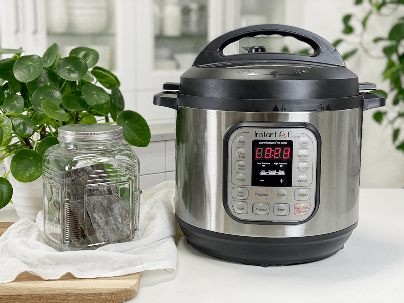
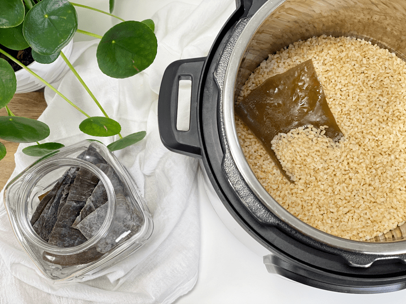
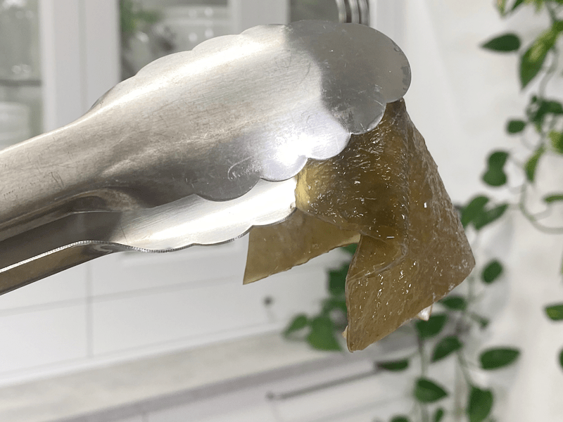
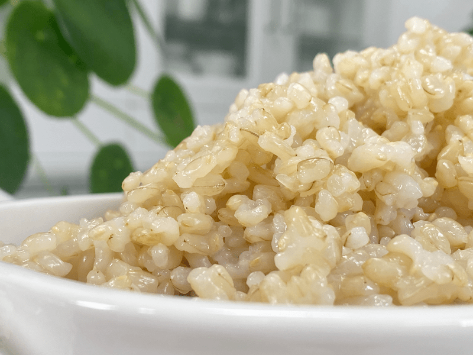
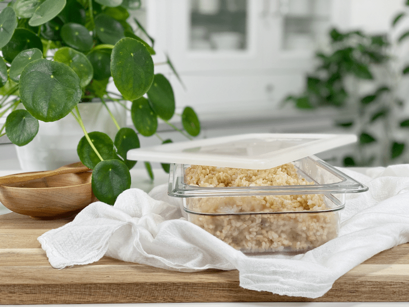

Brown Rice with Kombu | Instant Pot
Being prepared for the week leads to less stress–a perfect tool is batch cooking! It’s perfect for busy weeknights and easy meal prep. A container of unseasoned prepared brown rice can become the foundation for many meals. Enjoy alongside steamed vegetables, add it to your burritos and salads, and so much more. You can even turn it into a dessert by adding a splash of your favorite plant-based milk, a touch of sweetener, and a dash of cinnamon. Delicious!

You don’t have to use an Instant Pot to make rice, BUT doing so cuts the cooking time in half. Set it and forget it; no need to tend the pot. No more uncooked, burnt, or mushy brown rice!
Rice Texture Preferences
If you want perfectly separate grains, rinsing it first helps to remove the thin layer of starch from the surface of each grain, which helps keep the rice from sticking together. You can also add a tablespoon of oil to the pot when cooking. I found that the addition of kombu seaweed helped to create not-so-sticky rice.
Why I Add Kombu Seaweed and What It Is
Kombu is a type of sea kelp that is rich in vitamins and minerals, including potassium, calcium, and iodine. It is a great ingredient to keep stashed in your pantry, as it is a tasty addition to soups and salads, and makes beans and grains more digestible when added to the cooking water.
It has a very mild flavor, not one that you would expect from a seaweed. It has a saltiness that comes from a balanced, chelated combination of sodium, potassium, calcium, phosphorus, magnesium, iron, and a myriad of trace minerals found in the ocean. So next time you make a pot of rice, grains, soup, vegetable broth, or beans, add a strip into the pot and reap the nutritional benefits of seaweed.
Important Note – Kombu can be eaten if you want the added nutrition. Just dice it up and stir it into your dish. You can also save it in the fridge after the rice has cooked and reuse it a couple of times before tossing it. I have a post that you can view (here) if you want to learn more.

Why I Soak My Rice
I am all about making every bite count when I prepare food, hence why I add the kombu as well as soaking my rice overnight before cooking it. In general, soaking any type of grain before cooking renders its nutrients more digestible by breaking down and neutralizing phytic acid, which is an anti-nutrient that prevents the absorption of calcium, zinc, and other minerals. You can skip this step, but your nutritional outcome will be better if you soak.
How Much This Recipe Yields
As far as measurements go, you can adjust them to meet your family’s needs. Just keep the rice to water ratio 1:1. Should you decide to double or triple this recipe, the cooking time doesn’t change. However, the overall time will be longer when you prepare a larger quantity because it will take longer for the pot to come to pressure when compared to a smaller quantity of rice.
The maximum amount you can cook at one time will depend on the size pot you have. I use an 8-quart; therefore, the max I cook is 3 cups of rice and 3 cups water. The reason for this is because rice creates foamy, starchy water as it cooks, and you don’t want it to rise too high during the cooking cycle and damage your pot.
Making the Best of Every Bite!
- With brown rice, only the hull is removed during processing; the bran is retained, resulting in more fiber and nutrients.
- By adding the Kombu seaweed, you ramp up the protein, vitamins, and minerals.
- By soaking the rice, you make it more digestible, and your body better absorbs minerals.
 Ingredients
Ingredients
Yields 6 cups cooked rice
- 2 cups brown rice, soaked
- 2 cups water
- Kombu seaweed (6 inches)
Preparation
- Soak the rice in 4 cups of water along with 2 Tbsp raw apple cider vinegar. Cover with a dishtowel and leave o the counter for up to 8 hours. Drain and rinse before using.
- Use the soak water to water your garden.
-
Add the rice, kombu, and water in the Instant Pot, giving it a quick stir. Secure the lid and make sure the steam release valve is pushed to Sealing.
-
Press the Manual button and cook at high pressure for 22 minutes for short-grain brown rice and 28 minutes for long-grain brown rice.
-
When the cooking cycle is complete, allow the pressure to release naturally until the LCD screen reads LO:23, then flip the release valve to “Vent” to release any remaining pressure. (shouldn’t be any)
-
Fluff the rice with a fork and remove kombu before serving. It is edible but not very appealing by itself.
Food Storage
When it comes to storing hot foods, we have a 2-hour window. You don’t want to put piping hot foods directly into the refrigerator. However, If you leave food out to cool, and forget about it you should, after 2 hours, throw it away to prevent the growth of bacteria. (source) Large amounts should be divided into smaller portions and put in shallow, covered containers for quicker cooling in a refrigerator that is set to 40 degrees (F) or below.
- Fridge – In a sealed container, it will keep for up to 7 days.
- Freezer – You can also freeze the rice in individual or meal-sized portions for up to 3 months.
-

-
I always soak my rice prior to cooking.
-

-
Add the drained rice, water, and kombu seaweed to the pot. Hit “Manual” and set for 23 minutes on HIGH.
-

-
Once it is done cooking, the counter starts going back up (pressure is releasing during this time). Once it hits 23, turn the pressure valve to vent to make sure all pressure has been released. Remove lid.
-

-
Here is what it looks like after its been cooked.
-

-
As you can see, the seaweed gets super soft. Remove it.
-

-
Brown rice results are in!
-

-
Store the cooked rice in an airtight container and place in the fridge or freezer.
© AmieSue.com